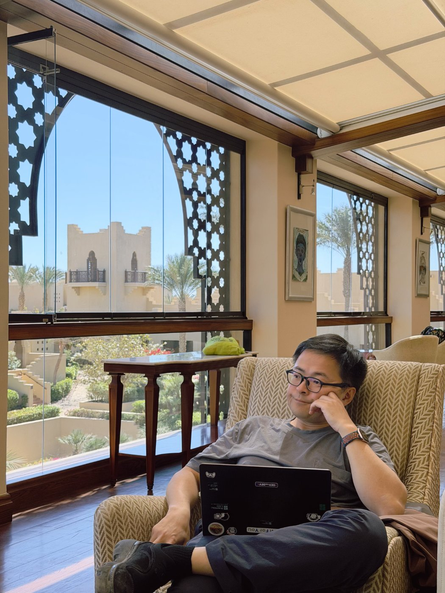

中午刘教授回顾了亚伯拉罕三宗教的简史。犹太教、基督教、伊斯兰教同出一源，却成了今天中东冲突的三条主线。同为伊斯兰教的逊尼派和什叶派也在打——信仰这个东西，有些时候真的无法调和。
中午在沙姆沙伊赫飞开罗之前，刘教授做了一个简短的回顾——亚伯拉罕三大宗教的基本脉络。这个话题在旅途中已经反复出现过：第一天在萨拉丁城堡的清真寺里，第三天在科普特开罗的教堂里，第四天在亚历山大图书馆的斐洛讨论中。但直到今天坐在一起系统听一遍，才真正感受到一个简单事实的重量——犹太教、基督教、伊斯兰教，追根溯源都是同一个人的后代。
亚伯拉罕是三大宗教共同承认的先祖。犹太人认为自己是亚伯拉罕与妻子撒拉之子以撒的后裔；阿拉伯人（伊斯兰传统）认为自己是亚伯拉罕与侍女夏甲之子以实玛利的后裔；基督教则在犹太教的基础上接纳了耶稣作为弥赛亚。三棵大树，同一条根。
故事本可以到此为止——同源，分流，各自生长。但真实的历史远比这复杂。分流之后不是和平共处，而是两千年的冲突、迫害、征服与反征服。十字军东征是基督徒打穆斯林，大流散是基督徒和穆斯林迫害犹太人，以色列建国后是犹太人和穆斯林打，中间还夹杂着基督教内部的东西教会大分裂、新教改革中的宗教战争……
同一个上帝的子民，为什么打成了这样？
如果说三大宗教之间的冲突还可以用"不同信仰"来解释，那么同一宗教内部的冲突就更令人费解了。
伊斯兰教的逊尼派和什叶派之争，根源不在教义，而在于先知穆罕默德去世后的继承权问题。逊尼派认为继承人应由推选产生（阿布·伯克尔），什叶派认为应由先知的血亲继承（阿里）。公元680年的卡尔巴拉战役中，阿里之子侯赛因被杀，什叶派从此成为"殉道者的信仰"。一千三百多年过去了，这条裂痕不仅没有愈合，反而在地缘政治的放大下变得更深。
今天的中东版图上，逊尼派的沙特、阿联酋、埃及、约旦站在一边；什叶派的伊朗、伊拉克南部、黎巴嫩真主党、也门胡塞武装站在另一边。昨天晚上手机推送的美以打击伊朗新闻，表面上是美以和伊朗的冲突，底下还有一层是逊尼派阵营与什叶派阵营的角力。而我们刚刚离开的沙姆沙伊赫，正坐在这两个阵营的交界处。
在昨天的思考中，我们讨论了沙姆沙伊赫"距离战争200公里"的悖论——和平峰会的场所、恐怖袭击的现场、豪华度假村的所在地，三重身份叠加在同一座城市。今天的问题从距离延伸到了根源：为什么信同一个神的人会彼此杀戮？
这十天旅途下来，看过了清真寺、科普特教堂、犹太会堂遗址、法老神庙，有一个感受越来越清晰：信仰一旦形成，就很难被说服改变。
这不是理性层面的问题。你不能用逻辑说服一个什叶派穆斯林"其实阿布·伯克尔的继承权更合理"，就像你不能用证据说服一个犹太人"耶稣确实是弥赛亚"。信仰的底层不是论证，而是身份认同——我是谁，我属于哪个群体，我的先祖受过什么苦难。卡尔巴拉的殉难对什叶派而言不是一段可以讨论的历史，而是一个被反复纪念和重演的创伤叙事，它定义了"我们是谁"。
而身份认同一旦和"神圣"挂钩，妥协就变成了背叛。世俗冲突可以谈判——领土可以分割、资源可以共享、权力可以分配。但宗教冲突触碰的是"什么是对的"这个层面，而在信徒看来，神给出的答案只有一个。两个阵营都确信自己站在真理那边，这不是谈判桌上让一让就能解决的事。
从亚伯拉罕到今天，四千年过去了。同源的三大宗教各自发展出了庞大的神学体系、教法传统、政治结构。每一次分裂都在制造新的身份边界，每一次冲突都在加固这些边界。起点越近，分歧越痛——因为那意味着"你本该和我一样，但你偏不"。兄弟之间的仇恨，往往比陌生人之间更深。

飞机降落在开罗。从机场到酒店的路上，车窗外闪过一座清真寺和一座科普特教堂，隔着不到一百米。在埃及，两种信仰的建筑经常比邻而立。也许这就是这片土地的日常——裂痕一直在，但生活也一直在。